사회 여러 부분에서 우리의 𓁹은 다양한 의미의 매개체로 작용한다. 𓁹에 대한 속담, 𓁹에 대한 비속어, 𓁹을 꾸미는 악세서리, 𓁹을 보호해주는 기구, 𓁹을 아름답게 하는 수술, 𓁹을 통한 감정표현까지. 𓁹이란 무엇인가? 우리는 𓁹에서 무엇을 볼 수 있는가? 𓁹은 우리에게 어떤 의미가 있을까?세상 곳곳에서 찾아볼 수 있는 𓁹의 여러가지 형태를 분석해보자. 이 홈페이지는 𓁹이라는 요소가 우리 삶에서 어떤 역할을 하고 있는 지, 얼마나 깊게 관여하고 있는 지 탐구하고자 한다.(1)(2)(3) 눈 (4) 창
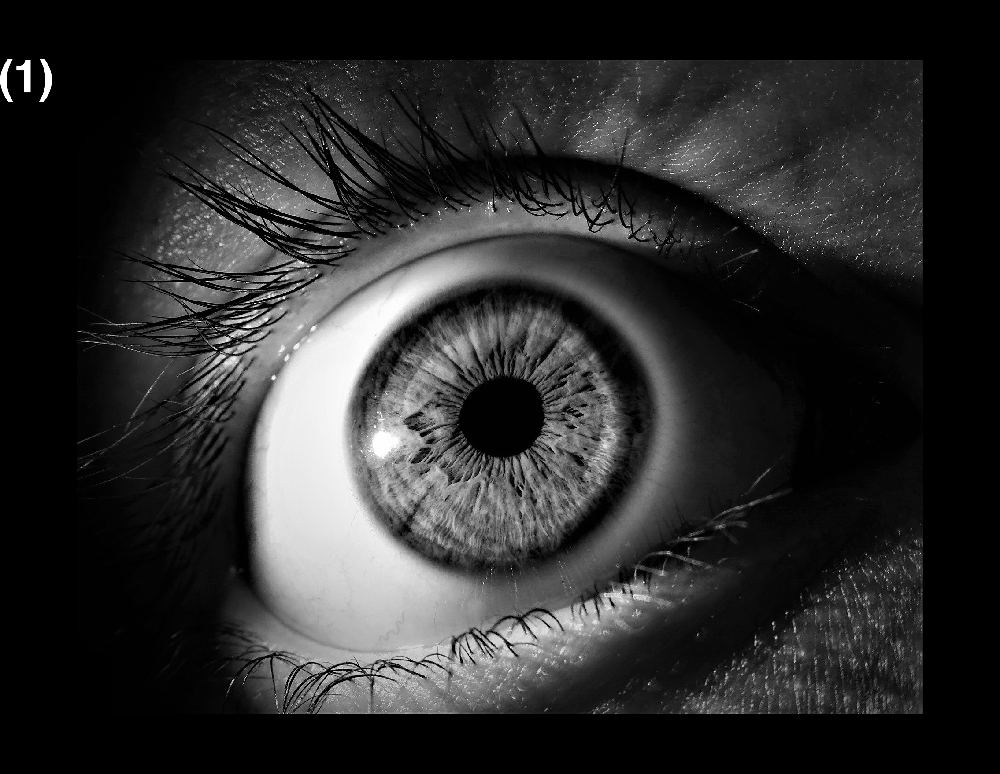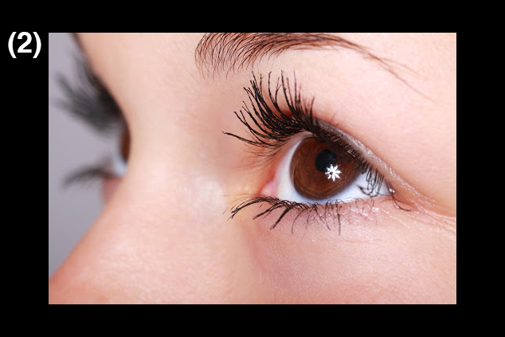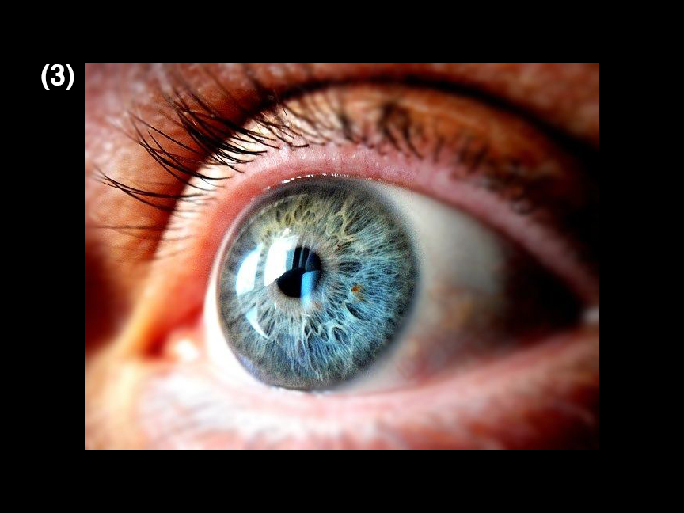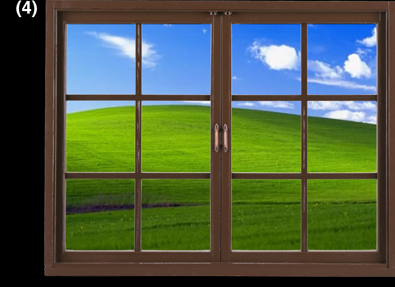
동물의 눈 animal eye
내가 보는 세상이 우리 집 초코에게는 다르게 보일 수 있고, 거리의 비둘기가 보는 세상은 나의 눈에 보이지 않을 수 있다. 동물과 인간은 비슷하면서도 다른 눈을 가지고 세상을 바라본다. 동물들은 세상을 어떻게 보고 있을까?
<사람의 눈으로 본 풍경>
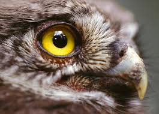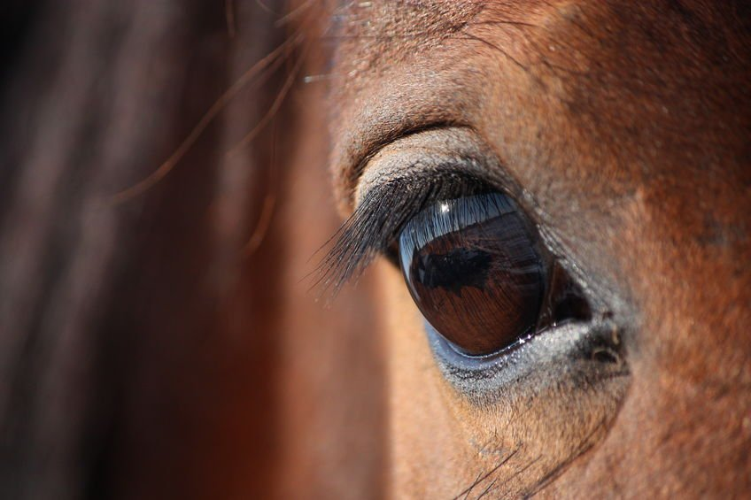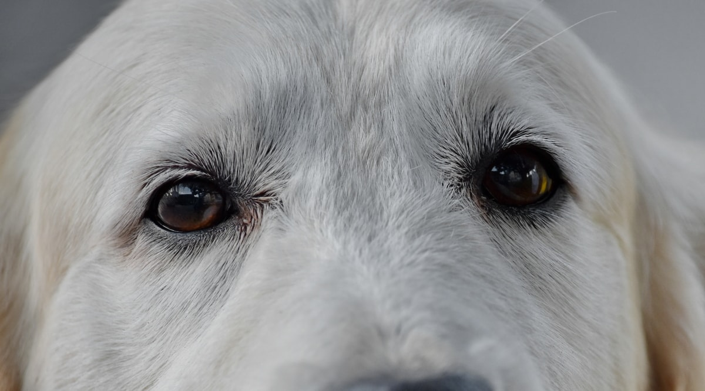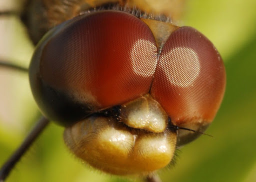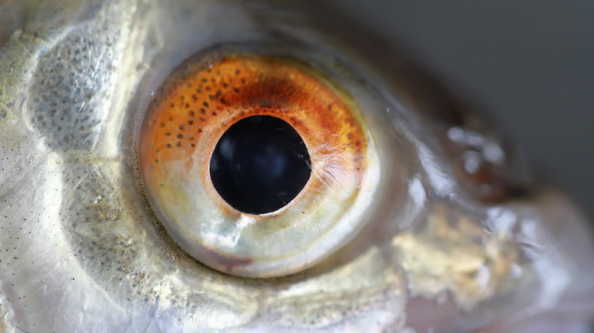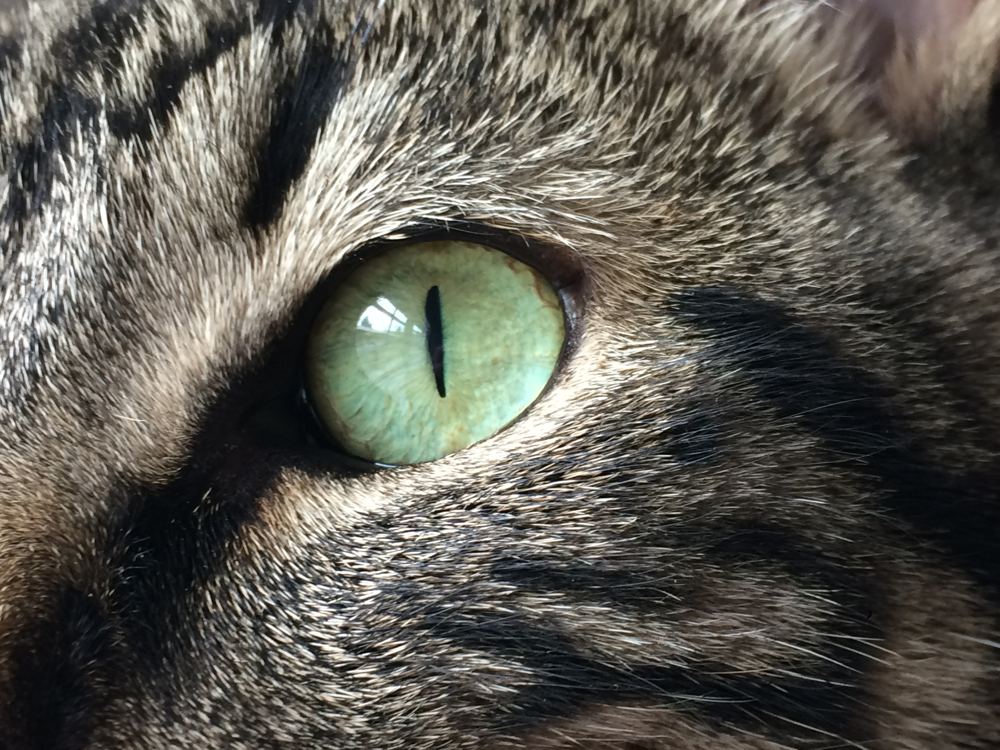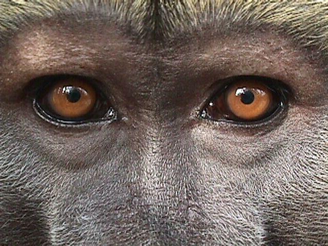
(새) 인간보다 더욱 선명한 색상을 볼 수 있다. (말) 시야각이 350도이다. (개) 빨간색이 노란색으로 보인다. (잠자리) 겹눈을 통해 한 번에 360도를 볼 수 있다. (물고기) 360도 렌즈를 통해 보는 것과 같다. (고양이) 간상세포가 많아 빛을 많이 수용하며 적록색맹이다. (원숭이) 사람과 비슷하게 볼 수 있다.
美
오래전부터 사람은 아름다움을 추구해왔다. 그들은 타인에게 자신을 어필하기 위하여 끊임없이 가꾸고 장식했다. 그중에서도 특히 그들의 눈은 항상 강조되어 화려하게 빛나고 있었다. 눈은 어떤 힘을 가지고 있는 것일까? 눈에게 집중하는 이유는 무엇일까? 얼굴 위의 두 눈은 늘 주인공을 맡는다.
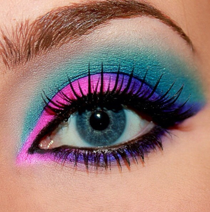 아이섀도우는 탈크 파우더와 여러가지 색소로 만든 아이 메이크업에 쓰이는 화장품이다. 눈가에 바른 알록달록한 색깔이나 반짝이는 것이 아이섀도우다. 크게 파우더 타입과 리퀴드 타입, 크림 타입 등이 있다. 옛날 서양 여성들이 다크서클을 인공적으로 따라한 것에서 유래되었다고 한다. '눈 밑이 시커멓다는 것 = 밤을 새었다는 것 = 밤새 무도회에서 춤을 추었다는 것 = 사교계의 스타' 라고 여겼기 때문이라고 한다. 더 오래 전에는 고대 이집트의 귀부인들이 눈가에 짙은 색을 발라 눈을 크게 보이게 화장한 것이 벽화와 유물로 발견되었다.
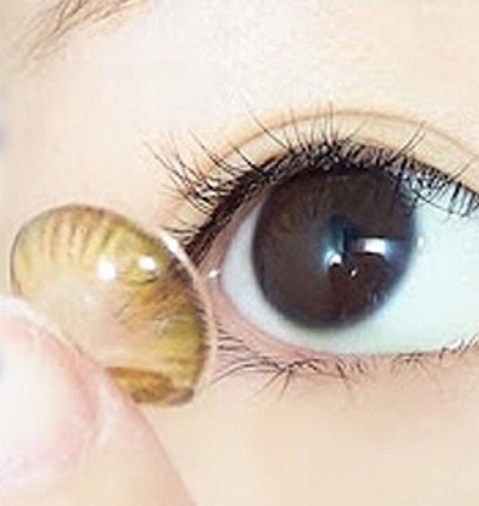 컬러렌즈는 일반 콘택트렌즈 표면에 색을 넣어 특수처리를 한 미용용 렌즈이다. 주로 천연염료를 사용하는 것으로 알려져 있으며, 현재까지는 제조기술상의 이유로 소프트렌즈만 제작되어 있다. 색깔은 파란색·갈색·회색·녹색·보라색 등 다양하고 눈동자의 색깔이나 그 농도에 따라 밝기도 다르다.
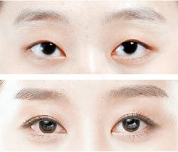
쌍커풀 수술은 성형수술의 하나이다. 줄여서 쌍수라고도 한다. 눈 윗부분의 외꺼풀을 찝어내어 인공적인 쌍꺼풀을 만드는 수술이다. 상안검에 라인이 하나 더 있으면 시각적 착시효과에 의해 커 보이는 데다, 눈을 뜰 때 눈꺼풀이 좀 더 위로 말려 올라가기 때문에 눈의 노출 면적이 커져서 눈이 커 보인다. 원래 눈꺼풀이 매우 두꺼운 경우에는 효과가 크다. 수술 방법에는 대표적으로 절개법, 부분절개법, 매몰법 등이 있다. 쌍꺼풀 수술을 받을때 앞트임, 뒤트임 등을 주로 같이 받기도 한다.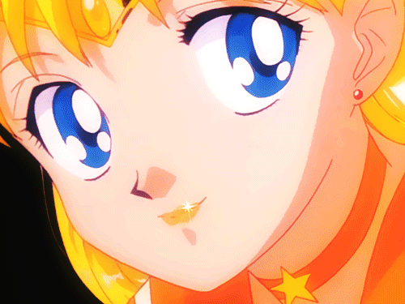
In Japan, the manga industry is so developed that the animation field has become a popular culture. It is in the spotlight as an animation powerhouse with famous manga such as Dragon Ball, One Piece, Naruto, and Bleach that are commonly known in the world. In the case of Marvel Comics or DC Comics, the character is expressed similarly to the human figure. On the other hand, if you think that Japanese characters are real people, they draw quite jingle eyes. Earlier, it was said that American animations are drawn close to human figures, but ironically, the animator who introduced the first big-eyed character into Japan is a writer named Osamu Tezuka, who is called the father of Japanese manga. He is the creator of Atom. Eyes are quite big just for an atom? The reason he devised a character with big eyes like Atom was because of Disney cartoons. When Disney's Snow White animation came into Japan, it was a shock to see that there were only black and white manga in Japan at the time, and various colors appeared in the animation market. Disney's big eyes conveyed the character's emotions better, and since then, Mr. Tezuka started drawing by referring to Disney's drawing style that naturally expresses the eyes wide.